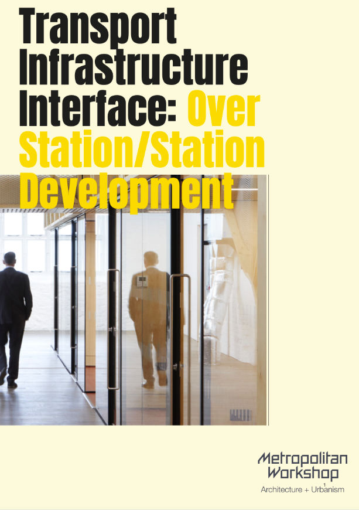

Metropolitan Workshop
For a period of several months, I assisted the tender team at Metropolitan Workshop, a firm specializing in architecture and urban design. During this time, I was responsible for producing promotional materials and supporting documents for bids.
One of my key contributions was the creation of a 140-page brochure showcasing the company's portfolio of housing and masterplanning projects.
As a result of this project, I was tasked with updating the firm's InDesign templates to align with a new house style. To help the architects quickly adapt to these changes and maintain brand consistency, I also created a series of short training videos.


